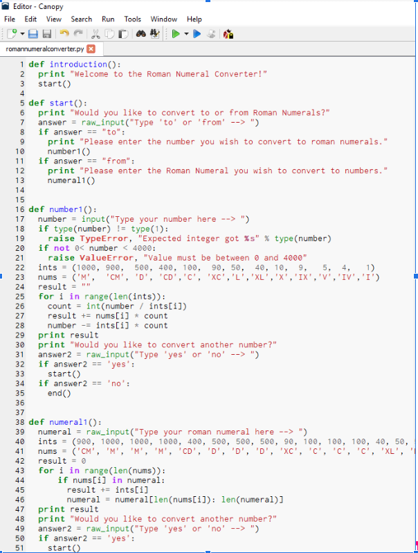

Play our game "Witch Hunt" made on Scratch! In our game, you must select the Witch's favorite snack by clicking on her after finding the path to the foods using the left,right,up, and down arrows. If you select the correct food she will be happy. Chose the wrong one and she will die ): Goodluck!
Look at an image of our game "Space Invaders" made on MIT App Inventor. Move your Android device left to right in order for the spaceship to move. Tap the screen to release lazers to destroy the enemy ships. If you defeat the ships you will move on, if you don't defeat the ships the game will get slower! Enjoy!
Click on our Seahorse Kangaroo Hybrid to play our Interactive Fiction game based on the Voyage and Return plot! Begin in the sea and try to find your happy ending by choosing the important life decisions for the seahorse. Choose the wrong choice and you will be sad ): Enjoy (:

Look at this snippet of our code to the Roman Numeral Converter made on Python! Using our creation you can discover the roman numerals of numbers between 1 and 4000. Enjoy!